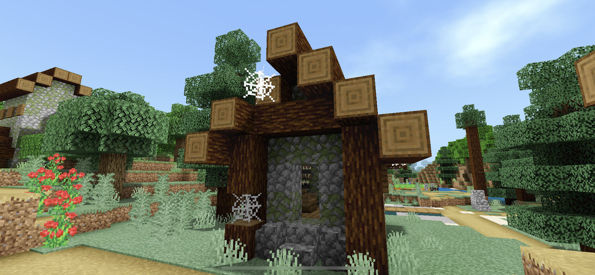

雲の描画について
今回のアップデートで、雲の描写が二種類で変更可能になりました。 下のGIFのように変更できます。

この画像が
”Nomal Cloud”の画像です。

この画像が
”Realistic Cloud”の画像です。
しかし、上の”Realistic Cloud”の画像には問題があります。
上の画像を見ると、
バニラの雲が表示されてしまっています。そのため、下のGIFのようにして雲を消しましょう。

これが正しい雲の描写になります。
ISBE v1.1 Download